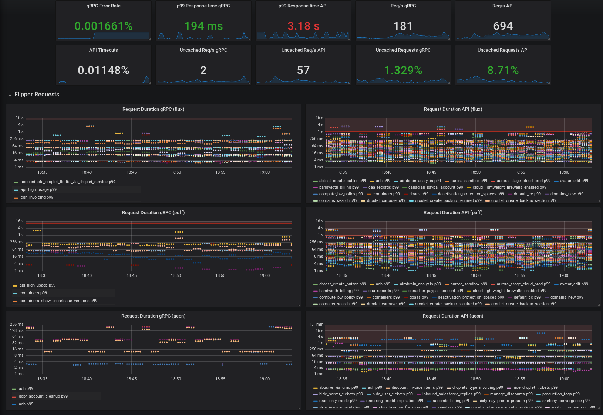

Maurício Linhares / @mauriciojr / Software Engineer at DigitalOcean
Multiple teams with different perspectives consuming our dashboard.
Lots of metrics, lots of data, not a lot of detail or explanation.

Where is it broken?
Making sense of a distributed architecture is harder.
Every dashboard should answer one or a bunch of related questions.
Infrastructure team, lots of downstream dependencies.
Dashboards should clearly define which metrics are yours and which ones are not.
Show less data with more context
Add explanation, labels and thresholds right into the dashboard.
Define what it means to be healthy.
Make it prominent.
Forget averages, use percentiles.
Testing systems from the outside
A client side outage is not visible with internal-only metrics